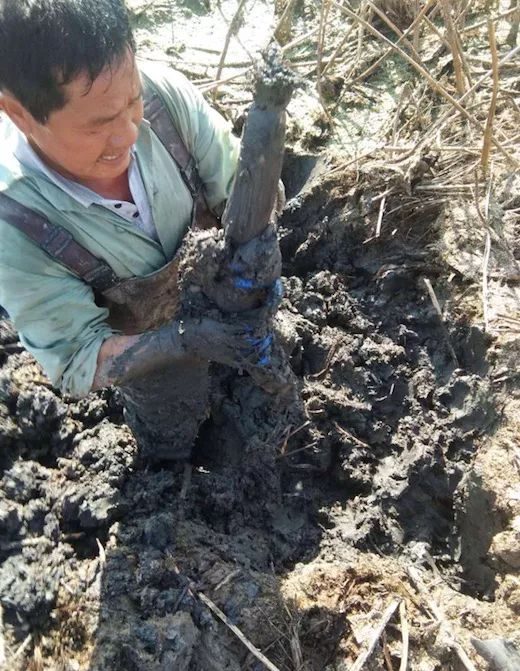

世卫组织前传染病事务主任：现在说病毒将感染全球2/3人口还太早
原文链接 备份链接 图片来源：视觉中国 记者 | 潘金花 “ “各国应该做的，是继续遏制病毒的传播，减少人们与病毒的接触，隔离病例并追踪接触者。中国在这方面已做出很大的努力，和疫情刚爆发时相比，中国显然已经延缓了疫情蔓延至全球的速度。” …

雪中挖藕人。图片来自：图虫
记者： 赵晓娟 编辑 ：昝慧昉
“
“不止粉藕难买到，什么藕都不好买到，因为藕农歇了导致产量断了”。
”
在湖北买不到湖北藕？
家住武汉光谷和后湖的两名消费者抱怨，现在买菜不易，买藕则难上加难。
位于武汉后湖区域的一家天鲜配商家告诉界面新闻，涨价肯定是涨了的，现在藕产品不好批发，消费者下单也必须走订单制，第一天预定次日送达，“不止粉藕难买到，什么藕都不好买到，因为藕农歇了导致产量断了”。
眼下大型超市虽未完全断货，但消费者也得盯着手机屏幕看准补货时间来抢货了。
武汉市强鑫蔬菜产销专业合作社，是盒马在武汉的供应商，其负责人告诉界面新闻，因为封村和不让人聚集的要求，藕农暂时还不能大面积挖藕，只有基地附近的少部分塘可以挖，藕每天只有一两千斤的供应量，得供应给盒马和武商两家。
眼看快要“断粮”，采购商也开始加紧联系藕农。
湖北荆州洪湖的梁仁雕拥有200多亩藕田，最近，他接到的电话多半是询问能否少量开挖藕田的。
“好几个挖藕师傅给我打电话，问我这几天能不能开始挖藕。他们是家里的主要劳动力，往年这个时间还要再挖一个月的藕才会休息。”梁仁雕告诉界面新闻，因为疫情，没有接到通知没有人敢去挖藕。尽管已经有挖藕工人开始催促，他也不太敢冒这个险。
对于挖藕师傅来说，这个时间段仍然是赚钱的旺季，没有人想错过。
梁仁雕向界面新闻介绍，春节前后由于气温低、下霜早，挖藕人较辛苦，所以这个时间的挖藕师傅工资会更高，也意味着藕农的人工成本会增加。挖藕师傅每天工作6-7小时，人均挖藕300-400斤，每斤能赚1.1至1.2元的人工费。因此，莲藕终端售价也会水涨船高，零售价在5-6元一斤。
按照往常，在梁仁雕的藕田中，挖藕师傅再干一个月，就到了放藕秧子（种藕）的时间，他们通常会回家休息近一个月，到5月早期的藕带开始上市，这是莲蓬的收获季；7月则是3537（品种名）的藕开始上市，这种藕鲜嫩爽脆，也被人称作新藕；接着到了8月，洪湖最为知名的粉藕就可以开挖了，挖藕人的劳作也基本围绕这一生产周期，一直挖到来年4月。周而复始。

为梁仁雕挖藕的师傅。图片自受访者
湖北莲藕的种植面积及产量位居全国第一，种植面积达到200多万亩，产量占全国莲藕总产量的三分之一。公开资料显示，整个湖北省莲藕主产县包括蔡甸、汉川、洪湖、仙桃、浠水、江夏、东西湖、云梦、监利、赤壁、嘉鱼等10多个县市。
梁仁雕的藕田所在的荆州洪湖地区，过去低洼地势，在地质反复演变中，形成了洪湖青泥巴特有的土壤。这种土壤肥力足，质地细腻柔软，抓肥能力强，适合莲藕生长。故而，洪湖莲藕形状长、饱满，淀粉含量丰富。2015年，“洪湖莲藕”获得了农产品地理标志登记。
梁仁雕的藕田多半是粉藕，少部分是3537，还有一部分是子莲——专门用于生产藕带、莲子、莲蓬。整体算下来，他的藕田一年的总产量在30吨左右。
往年，梁仁雕会挖藕挖到腊月二十八，今年在腊月二十五六时收工，彼时疫情刚爆发。
如果没有疫情，年后这个时间挖藕师傅基本会陆续到岗。他没有想到疫情持续了这么久，而且不知道何时能结束。
不过梁仁雕告诉界面新闻，年前粉藕已经出货了75%左右，剩余的量并不太大，现在没有办法进行挖藕作业，只好把藕池子里放满水，减缓光合作用来抑制藕的生长。如果过一段时间还不能开挖，就得留作种藕。

梁仁雕的藕田。图片自受访者
和粉藕种植户相比，洪湖市弘科水生蔬菜种植专业合作社的赵科几乎不受影响，他的700亩藕田以种植藕带为主。
百科资料显示，藕带是莲的幼嫩根状茎，由根状茎顶端的一个节间和顶芽组成。藕带与莲藕为同源器官，条件适宜时，藕带膨大后就成为了藕。
不受影响的原因是，现在的季节，是藕带在水下生长的季节，到5-8月开始收割。赵科的藕带大概亩产1500斤，由规模更大的专业公司以订单形式采购，最后流向餐饮市场。海底捞也是这些藕带产品的去向之一，此外还有航空公司、高铁等客户。
赵科告诉界面新闻，与粉藕相比，藕带的利润空间要大一些，因为种植管理更为麻烦，粉藕只需要管理水位，不要让塘里的水位大幅度升降，涉及的人工不多，而藕带有100天的关键收割期，每天都需要采摘收割，人力成本更多。
武汉江夏区农业局一名专家对界面新闻表示，目前来看真正受影响的是粉藕，这种莲藕销售旺季在春节前，储存期比较长，春节后一个月粉藕采摘量虽不多，但正常时间里年后再会迎来一次销售小高潮。
按照以往，消化掉年前的存量藕，多数挖藕师傅将开始新一轮的挖藕工作，市场上的藕供应随之增多，价格也会平稳。
但今年挖藕师傅无法上岗，一些采购商的存货也已见底，藕农复工的要求越来越紧迫。
2月21日，梁仁雕得到消息，他所在的市场为此开始考虑给藕农派发通行证，在检查合格并办理好通行证之后，便可以少量挖藕。梁仁雕告诉界面新闻，这两天已经开始办理通行证了，不过一天只能挖300斤左右，他的藕田还剩余5万斤藕可以开挖。
未经授权 禁止转载

原文链接 备份链接 图片来源：视觉中国 记者 | 潘金花 “ “各国应该做的，是继续遏制病毒的传播，减少人们与病毒的接触，隔离病例并追踪接触者。中国在这方面已做出很大的努力，和疫情刚爆发时相比，中国显然已经延缓了疫情蔓延至全球的速度。” …
原文链接 备份链接 图片来源：图虫创意 记者：肖芳 “ 吴海说，他写文章不是为了自己，而是为所有中小企业呼吁。 ” 一场突如其来的疫情，打乱了很多公司正常的经营节奏，中小微企业面临的挑战尤为突出。 2月10日晚，桔子酒店创始人、魅KTV董 …
原文链接 备份链接 Original 陈鑫 马乔 等 界面新闻 界面新闻 About Feature 界面新闻是中国具有影响力的原创财经新媒体，只服务于独立思考的人群 Yesterday 图片来源：海洛创意 记者： …
原文链接 备份链接 图片来源：视觉中国 记者：彭强 编辑：张慧 “ 多数口罩机厂家的交货期限在6-8周左右，部分厂商则停止接单。N95型口罩生产设备交货时间要150天。 ” “现货口罩机肯定没了，市面上的二手机也基本上没货。” 张晓薇在电 …
原文链接 备份链接 人类历史上每一场大的疫情，对于文化的影响都非常巨大。我们应当通过这场国难，思考中国文化未来发展可能遇到的困境，努力将其转变为发展机遇。 口述 | 韩 晗 整理 | 孔冰欣 韩晗，武汉大学国家文化发展研究院副教授、中国 …